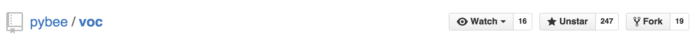
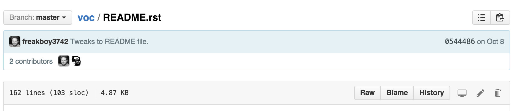
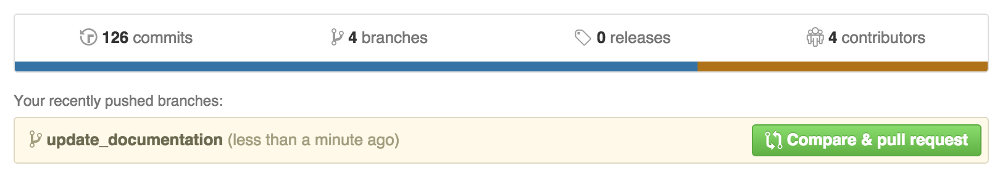

Contributing to BeeWare
in a nutshell
The BeeWare community has a strict code of conduct. If you have any concerns about this code of conduct, or you wish to report a violation of this code, please get in touch.If you experience problems with any of the PyBee products, log them in GitHub. If you want to contribute, fork the code and submit a pull request.
BeeWare Community Code of Conduct
As contributors and maintainers of this project, and in the interest of fostering an open and welcoming community, we pledge to respect all people who contribute through reporting issues, posting feature requests, updating documentation, submitting pull requests or patches, and other activities.
We are committed to making participation in this project a harassment-free experience for everyone, regardless of level of experience, gender, gender identity and expression, sexual orientation, disability, personal appearance, body size, race, ethnicity, age, religion, or nationality.
Examples of unacceptable behavior by participants include:
- The use of sexualized language or imagery
- Personal attacks
- Trolling or insulting/derogatory comments
- Public or private harassment
- Publishing other's private information, such as physical or electronic addresses, without explicit permission
- Other unethical or unprofessional conduct
Project maintainers have the right and responsibility to remove, edit, or reject comments, commits, code, wiki edits, issues, and other contributions that are not aligned to this Code of Conduct, or to ban temporarily or permanently any contributor for other behaviors that they deem inappropriate, threatening, offensive, or harmful.
By adopting this Code of Conduct, project maintainers commit themselves to fairly and consistently applying these principles to every aspect of managing this project. Project maintainers who do not follow or enforce the Code of Conduct may be permanently removed from the project team.
This code of conduct applies both within project spaces and in public spaces when an individual is representing the project or its community.
Instances of abusive, harassing, or otherwise unacceptable behavior may be reported by contacting a project maintainer at russell@keith-magee.com. All complaints will be reviewed and investigated and will result in a response that is deemed necessary and appropriate to the circumstances. Maintainers are obligated to maintain confidentiality with regard to the reporter of an incident.
This Code of Conduct is adapted from the Contributor Covenant, version 1.3.0, available from http://contributor-covenant.org/version/1/3/0/
Contributing to BeeWare
This GitHub tutorial is lovingly based on the DjangoGirls How To Contribute Tutorial, which is available under a Creative Commons Attribution-ShareAlike 4.0 license.
For this tutorial, we will be using the VOC repository as a bases for the links and references
Getting started and prerequisites
For contributing to BeeWare, the following is needed to get started:
- a Github account
- in the case of complex edits familiarity with Git command line basics or familiarity with an app (Windows, Mac) to push your edits made on your computer to Github.
Fork the repository
First fork the VOC repository to your personal Github account:

Editing Documentation
Simple changes
For simple changes like typo corrections you can use the Github online editor:
- Open your local fork page on Github,
- go to README.md file in any chapter,
- press the Edit icon (pen)
and you can edit the chapter directly on github.com.

Markdown syntax is used to edit the individual pages of the documentation.

Save your changes and create a pull request as explained below.
New code and complex changes
For adding new code, extending classes, or complex changes, you need to get a copy of the code to your local computer.
Either use the Github app for your operating system (mentioned above) or git command line to get the repository locally. You get the repository address from the front page of your own Github repository fork:
git clone git@github.com:yourusername/voc.git
Then, create a branch for your new changes to sit in. It helps to call the branch something related to the changes you are going to make.
git checkout -b update_documentation
Make any changes in the code, and ensure they are tested, and saved locally.
Then commit the changes using git and push the changes to your remote Github repository.
Example:
$ git status
On branch update_documentation
Untracked files:
(use "git add <file>..." to include in what will be committed)
README.md
$ git add README.md
$ git commit -m "Update README.md documentation for VOC"
[update_documentation fe36152] Added gitbook screenshot
1 file changed, 0 insertions(+), 0 deletions(-)
create mode 100644 README.md
$ git push
Counting objects: 11, done.
Delta compression using up to 8 threads.
Compressing objects: 100% (5/5), done.
Writing objects: 100% (5/5), 266.37 KiB | 0 bytes/s, done.
Total 5 (delta 1), reused 0 (delta 0)
To git@github.com:yourusername/voc.git
b37ca59..fe36152 update_documentation -> update_documentation
Making a pull request
After you have finished your changes you need to create a pull request on Github. PyBee will get notified about the pull request, review your changes, suggest any corrections if needed and then pull your changes to the master version.
In your own repository on Github press do Compare & pull request

Fill in the information why this change is being made. The reviewer can see the details of the actual change, so you don't need repeat the content of the change.
Then press Create pull request.
Github emails will notify you for the follow up process.
Learn more about the git process
There are many useful resources to help you learn how to log issues and raise Pull Requests in GitHub
- Contributing to Open Source from GitHub.com
- How to Fork a Repo from GitHub.com
What to work on
If you're looking for something to work on, and don't know where your effort would be welcome, try looking at the ticket tracker for a project of interest. There will usually be a couple of tickets with known problems; any ticket is a candidate for being fixed. Some tickets in particular will be tagged
up-for-grabs- this indicates that they are areas of particular interest where the project would like contributions.If you're a first time contributor, some tickets are also tagged as
first-timers-only. These are special issues that have been selected because they're relatively simple introductions to the project, and the PyBee team will mentor any first time contributor in committing a patch for one of these issues.If you've got your own idea for something, or if you don't see any tickets, or you want to be mentored on a ticket, or you aren't sure how to proceed, contact the project maintainers on Twitter or IRC. The project maintainers love collaborating, especially with new contributors, and will gladly answer any questions or walk you through any problems you may encounter.
Community
Code of Conduct
The BeeWare community has a strict Community Code of Conduct. If you have any concerns about this code of conduct, or you wish to report a violation of this code, please get in touch.Users mailing list
Got any questions about how to use a tool in the BeeWare suite? Join the BeeWare Users Mailing list and ask.Developers mailing list
Got some ideas for how we can improve a tool in BeeWare suite? Or have an idea for a completely new tool? Join the BeeWare Developers Mailing list and let us know your ideas.Github
Have you found a bug in a BeeWare tool? Do you want to contribute code to any of the BeeWare tools? All development takes places on Github.Contact
Twitter
Keep in touch by following @pybeeware on Twitter.IRC
Want to chat with the BeeWare community in real time? Join the #beeware channel on FreeNode.Funding
Interested in providing other financial assistance to the BeeWare project? Please get in touch.